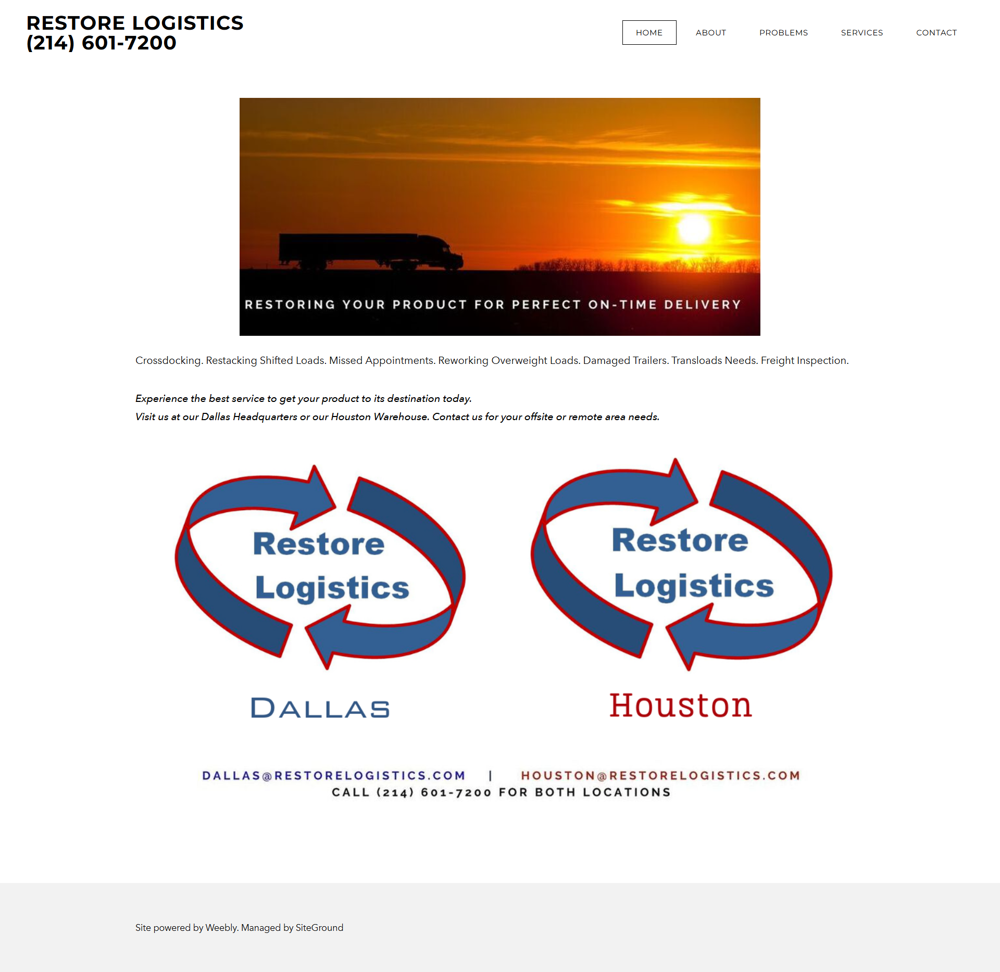
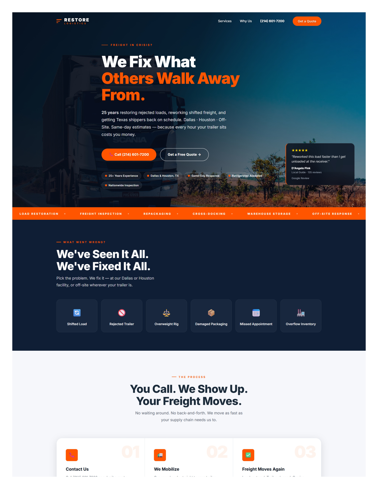
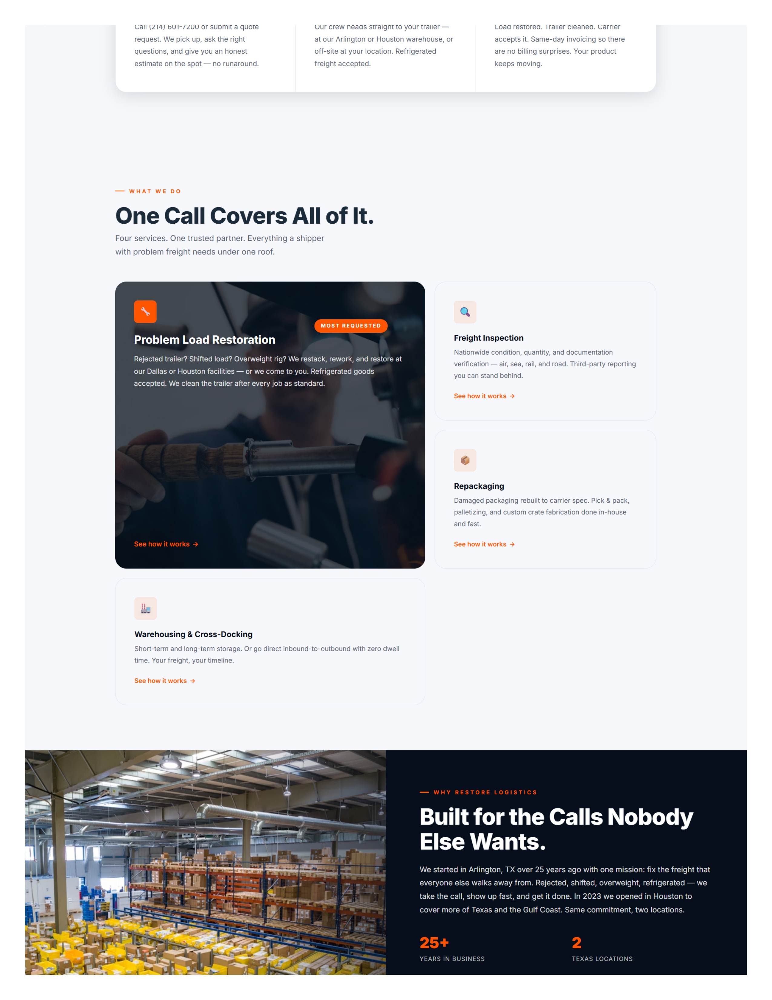
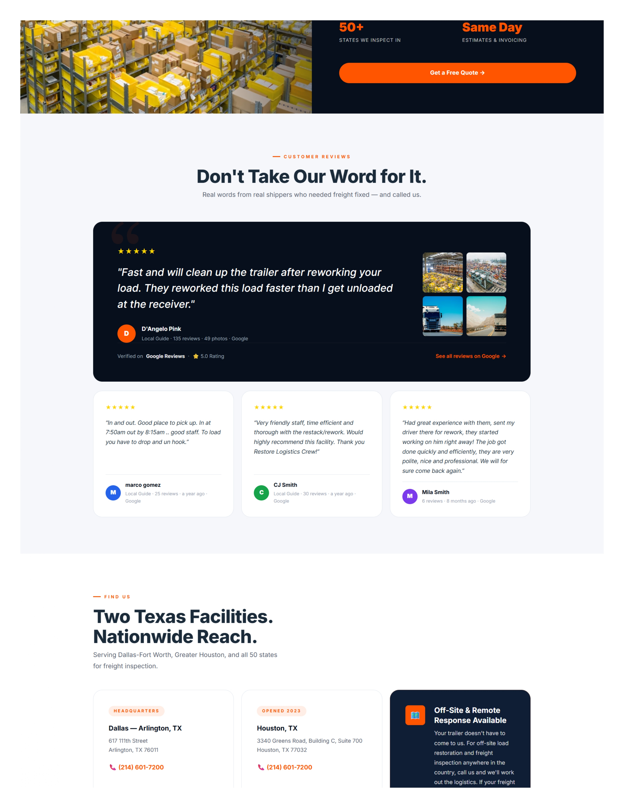
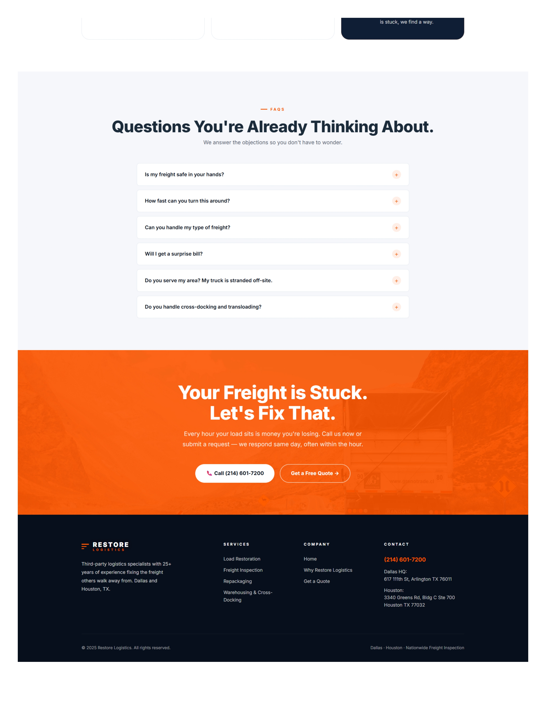

Restore Logistics had 25 years of experience and zero digital reach. Here's how we built a website that turned their expertise into inbound leads.
Restore Logistics fixes rejected trailers, shifted loads, and overweight rigs — fast. Their customers aren't comparison shopping. They're in a crisis and need a vendor in hours.
Despite real capability and verified Google reviews, they had no web presence to capture that demand. Every new customer came through referral. That was the gap.
"The website had to communicate capability and reliability in under 10 seconds — not after a phone call."
Project direction briefThe old site had a phone number and a service list. It had no ability to convert a visitor who didn't already know the company.


Not in demographic terms — in behavioral terms. What are they doing when they land here, and what do they need to see to act?
Driver rejected at a receiver. Hours to sort it before detention fees compound. Will call the first credible option they find.
Evaluating vendors for ongoing work. Needs proof of experience and clear service scope before committing.
Overweight or rejected load. Needs a cost and turnaround time before they'll pick up the phone.
None of these visitors are browsing. They arrive under operational stress. The site had to speak to the crisis first, build trust second, and make the next action obvious — at every point on the page.
Every structural decision on this website was driven by a business question, not a design preference.
| Decision | Business Rationale |
|---|---|
| Lead with the customer's crisis, not the company's story | Visitors in crisis skip company history. "We Fix What Others Walk Away From" names their problem in five words — that earns the scroll. |
| Phone number visible on every page, at all times | If a dispatcher has to search for the phone number, they call someone else. It's visible on every page, always. |
| Real Google reviews embedded early — including in the hero | Google reviews in the hero — not company-written testimonials. Third-party credibility before the visitor finishes the headline. |
| Load Restoration given priority over all other services | Restoration drives the most urgent, highest-intent inquiries. A visitor searching for load rework has already decided to hire someone — they just need to choose who. |
| A dedicated FAQ section addressing pre-call objections | Each FAQ answer removes a specific reason not to call. "Do you handle refrigerated freight?" "Can you come to us?" Answered on the page, they stop being objections. |
| Mobile-first layout with a two-button sticky footer | Dispatchers are on the road when freight problems hit. The mobile sticky footer gives them two options — call now or submit details — without having to scroll anywhere. |
| Quote form page with sidebar showing locations and next steps | When a visitor commits to the form, they want to know a real business will respond. Physical addresses and a visible next-step timeline on the same page reduce abandonment. |
| A separate "Why Us" page built for consideration-stage visitors | Not every visitor is in crisis. Logistics managers evaluating vendors need deeper proof. A dedicated page handles them without cluttering the homepage. |
Four screenshots from the live Vercel deployment, annotated for business function.
One job above the fold: convince a stressed visitor they're in the right place.
Engaged visitor's next questions: what do they offer, and why them over anyone else?

The visitor is interested. The remaining obstacle is trust.

Where hesitant visitors either convert or leave.

Four pages. One shared codebase. No third-party dependencies.
Full funnel in one page — hero to CTA. Handles the most traffic and does the most conversion work.
Detailed service blocks, each with its own CTA. SEO landing point for visitors searching a specific service.
For vendor evaluation — deeper proof points, all four reviews, and FAQ. Serves the visitor who isn't in crisis yet.
Form + sidebar with addresses and a clear next-step timeline. Captures leads who won't call cold.
Restore Logistics already had the capability to outperform every competitor in their market. What they lacked was a way to put that proof in front of customers who were actively looking for it. This website is that channel.
25 years of experience. Real reviews. Two facilities. None of it was visible online. Now it is.